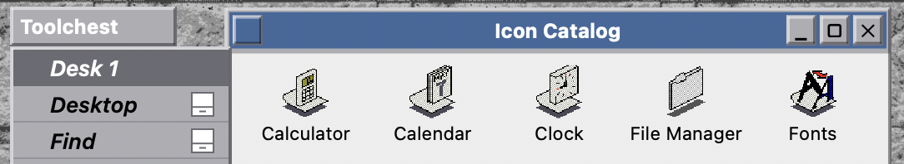

SGI IRIX
Silicon Graphics · the Indigo Magic desktop
IRIX was Silicon Graphics' Unix, and its Indigo Magic desktop (teal, purple and chrome, on the Motif-based 4Dwm) ran the most powerful graphics workstations of the 1990s. SGI invented OpenGL, and its machines set the standard for 3D long before the PC caught up.
If you saw dazzling computer graphics in that era, an SGI was probably behind them.
What made it special
- Home of OpenGL, the 3D graphics standard SGI created.
- The teal-and-purple Indigo Magic desktop and the colourful SGI cube logo.
- Workstation muscle for film, science and CAD.
- Co-developed the Nintendo 64 hardware.
ⓘ Did you know…
Jurassic Park & Terminator 2. SGI machines rendered the dinosaurs and the liquid-metal T-1000. In Jurassic Park, the girl's line “It's a Unix system, I know this!” shows a real IRIX 3D file browser called fsn.
OpenGL was born here. The graphics API that powers games and CAD across every platform started at SGI.
Inside the N64. Silicon Graphics co-designed the Nintendo 64's graphics hardware.